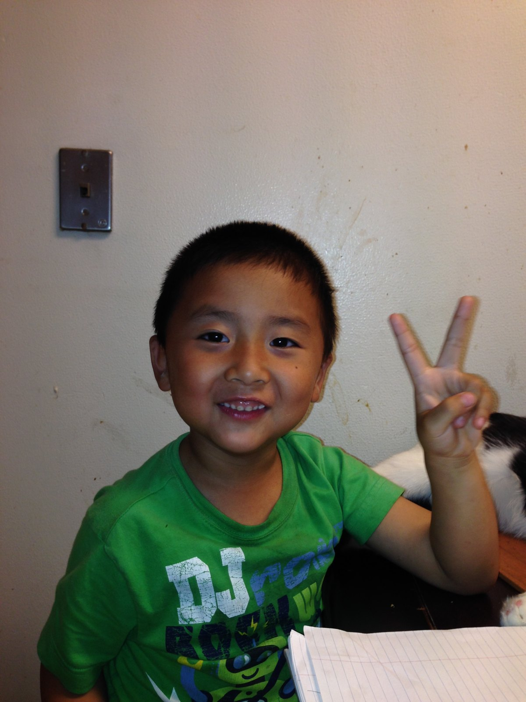

Fight on
Nobody Came Until Nine

School let out at three. My mother’s shift did not end when other people’s shifts ended, so most days I had six hours to fill and no phone to fill them with, which meant I had six hours and a campus.
I learned that place the way you learn a house in the dark. I knew which trees held weight and which ones dropped you. I knew the patch of concrete behind the cafeteria that stayed warm until five and took chalk well, and I drew on it, badly, for years, and rain took all of it and I drew again. I knew every sound the building made as it emptied out, which is a strange thing for a nine-year-old to be an expert in.
And I knew the fields. There were always kids out there after the last bell, in cleats, in club uniforms, running the drills that cost money. I watched a great deal of that. I want to be accurate here: I did not resent it, or not for long. It was more that I understood early that there were two categories, and I could name which one I was in, and the naming was not painful so much as simply factual, like knowing your own height.
What I drew on that concrete was mostly the same three things over and over. A stadium. A house with far too many windows. And a car, always a car, always with two people in it, which is not subtle and I am not going to pretend I did not notice later what that was about.
The hard part was never the six hours. I would like to be very clear about that, because people hear this and assume the loneliness was the wound. It was not. I was fine. I was a boy in a tree with a stick and an entire school to myself, which at nine years old is closer to a kingdom than a punishment.
The hard part was nine o’clock, when the headlights finally came around the loop, and I got in the car and saw her face and understood immediately that her day had been worse than mine.
What it meant at Ranch 99
There is a particular arithmetic a child performs in a grocery store when he already knows the family condition. You do not ask. That is the entire skill. You walk the aisle, you see the thing, and you run a small silent calculation about whether asking would put a certain look on your mother’s face. The answer was usually yes. So you keep walking, and you say nothing, and above all you do not make it a moment.
I got very good at not making it a moment. I am genuinely unsure whether that was healthy. I am quite sure it has been useful.
What it meant on a Tuesday morning
I showed up to school in a shirt inside out more than once. Backward too, which is a different and meaningfully worse mistake. Nobody had checked, because the person who would have checked got home at seven and needed to sleep before she did it again.
So you learn to laugh first, and loudly, before anyone else can get there. If you say it, it is a joke. If they say it, it is something else entirely. I have used that reflex approximately every day since.
What it meant in sixth grade
I started answering my mother’s email in sixth grade. Not forwarding it to her. Answering it. Permission slips, school forms, fundraiser notices, the endless administrative weather of having children in America, all of it arriving in a language she was still fighting with at the end of a fourteen-hour shift. So I wrote back as her, carefully, in the politest English an eleven-year-old could manage, and I signed it with her name.
I did not experience that as unusual. I experienced it as my job. I think I was proud of it.
What it meant at the stove
I learned to cook young because the alternative was not eating. There was nothing charming about it. No adult stood behind me explaining heat. I burned things, and then over some months I stopped burning things, and nobody was there for either milestone.
What it meant for playdates
Other children were dropped off. I ran. My mother was at work and the distance between our apartment and wherever everybody was gathering was a mile or two of identical suburb, so I went on foot, in cleats more than once, and arrived warm and slightly out of breath and did not explain why.
Sometimes I got lost. I had no phone, the streets in that part of town repeat themselves, and more than once a car slowed alongside a boy standing at an intersection trying to work out which direction was home. I had my mother’s number memorised the way other children memorise a song. I would recite it to whoever had stopped, and somebody’s father would ring her from his own phone, and she would tell him where we lived while I sat in the back of a stranger’s car being driven home by a man whose name I never learned. She thanked every one of them. I think about that more than I expected to, that a working woman’s entire contingency plan for her son getting lost was the decency of whoever happened to be passing, and that it held.
The honest inventory
Roughly in order.
I could not swim. Not slowly, not badly, I simply could not do it, because swimming is a thing somebody pays for and then drives you to twice a week for a year. I could not throw a football with a spiral on it. I could not dribble a basketball with my left hand, or with any real conviction using my right. I had never stood in a batter’s box. Soccer I understood mostly as a rumour, something other boys seemed to have been issued along with their shin pads. I could not hit a spikeball, and I was laughed at for that repeatedly, by people who were not being cruel so much as accurate. I picked up a lacrosse stick for the first time at a tryout, in front of boys who had been holding one since they were eight, and the sound a group makes while it watches you fail at something easy is not a sound you forget.
I was fat, and I was told so, in the specific unhurried way children tell each other things. I was picked last often enough that it stopped registering as an event and began registering as information, which I have come to think is the part that actually does the damage. Nobody was being vicious. They were being correct, and by about nine I had quietly accepted the account they had given me, which was that I was unathletic, ungifted, and the fat kid, and that these were facts about my nature rather than about my circumstances. It is remarkable how fast a child will take somebody else’s arithmetic and file it as truth about himself.
School offered no rescue either. I went to summer school every summer of elementary school. My English was still arriving, and I spent those Junes being taught again what I had not managed to hold the first time, and I did not think of myself as somebody who was good at learning, because nothing in the available evidence suggested that I was.
None of which made me miserable, and I would be lying by omission if I let this read as a sad childhood, because it was not one. I had friends, a great many of them, because I worked out extremely early that if you are going to be the worst athlete on the field you had better be the funniest person on it. Fart noises, I discovered, are universal. They translate across every language barrier a seven-year-old is ever going to meet, and mine was considerable. I once microwaved a plastic baby in the pretend kitchen of a kindergarten classroom and got a laugh so total, so unanimous, that I have been chasing it in one form or another ever since. I could not catch anything, but I could make a room go, and a room that is laughing does not much care what you cannot do.
Add it up and the fair summary of me at eleven is: not good at anything yet.
What I actually had
Three things, and I have spent real time thinking about this.
Spirit, which is a soft word for a hard thing. I did not stop. Not out of discipline. Stopping simply was not on the menu at my house, and by the time I was old enough to notice that other houses had it on the menu, I had already lost the taste for it.
A smile, and a real one. Not a performance. I liked people. I still do, embarrassingly much, and it has cost me far less than people warned me it would.
A joke, always loaded, usually deployed about four seconds after something went badly and occasionally while I was still crying. If somebody in the room was having a worse day than I was, I would find the thing that made them laugh, and I would find it fast. That was the one skill I had before I had any others.
I never wanted to do anything wrong. That is the part nobody believed.
I wanted, more than almost anything available to want, to be good. Being read as trouble while you are trying that hard is a specific ache, and I would not wish it on a child, and I am not sure I would trade it either.
What nobody had told me
Here is the thing I did not understand until years later, and it has reorganised how I look at more or less everything since.
The boys who could throw a spiral had been throwing one in a garden with somebody since they were four. The boy who moved fluidly through a lacrosse drill had six years of muscle memory behind him that I could not see, because muscle memory is invisible and from the outside it looks exactly like talent. The same was true in basketball, in baseball, in soccer, in the water. They were not gifted and I was not deficient. They were early, and early compounds, and I had been comparing my first week against their sixth year and drawing conclusions about my nature from the gap.
What I had instead was video games, which nobody counts as anything at all. But a game teaches one specific and enormously transferable discipline, which is that dying is information. You die, and you ask what killed you, and you change a single variable, and you go again, and the loop tightens every time you run it. Thousands of hours of that is not nothing. It is a childhood spent rehearsing the one thing most people never rehearse, which is looking directly at your own failure without flinching and asking it a question.
It is also, and I did not see the connection for a long time, the reason I got better at school. I was never the boy who simply knew. I was the boy who went back afterwards and worked out precisely where the understanding had broken, and that turned out to be worth considerably more than knowing, because it kept working after the material got hard and the boys who simply knew ran out of road.
Everybody talks about getting up, and getting up is the cheap half of it. What changes the next repetition is getting up while knowing exactly what put you down, and that is the only version of resilience I have ever found that actually accumulates instead of merely repeating.
So I keep notes now. After a session I write down what I could not do and why, and I look for the bottleneck rather than the failure, and then I train the bottleneck rather than the sport. I am, and I promise this is not a boast because it cost an absurd number of hours, now the best spikeball player I know. I am better than most of my friends at a good many things they used to beat me at without trying. And I found surfing, which almost none of them compounded as children either, so we all began at zero on the same morning and I finally got to see what happens when the starting line is honest.
None of which made me talented. It made me suspicious of the word. I no longer believe there is any such thing as simply smarter or simply more athletic. There is only experience that compounded somewhere you were not standing to watch it, and the very large difference between a person who has been doing a thing for six years and a person who started on Tuesday, which almost everybody, including the person starting on Tuesday, mistakes for a difference in kind.
And then I got to USC
And found they had made a slogan out of it.
Fight On. Two words on every wall and every shirt, thrown up with two fingers, chanted by eighty thousand people who mostly mean it as encouragement for a football team, which is a perfectly good thing to mean by it.
I remember hearing it the first time and feeling something complicated, because it does not mean a cheer to me. It means nine o’clock in an empty parking lot. It means not asking at Ranch 99. It means an inside-out shirt and getting to the joke before anybody else can. It means writing your mother’s email in sixth grade, and learning the stove by yourself, and running a mile because asking for a ride costs something you have decided not to spend.
It means nobody is coming to make this easier, and you go anyway, and you go cheerfully, because bitterness is enormously heavy and I could never afford to carry any.
There is a version of this story where the boy is bitter, and I understand how you get there. All the ingredients are present. But I have met bitter people and they are so tired, and being tired is the one thing my mother never got to be, so it always felt like a strange thing to spend her money on.
I did not learn to fight on at USC. I learned it in a schoolyard at nine at night with a piece of chalk and nobody watching. USC only gave me the words for it, and I was glad to finally have them, because I had been doing the thing for about twelve years without knowing what to call it.
If any of this sounds like your childhood too, I would like to hear from you. fyruan@usc.edu